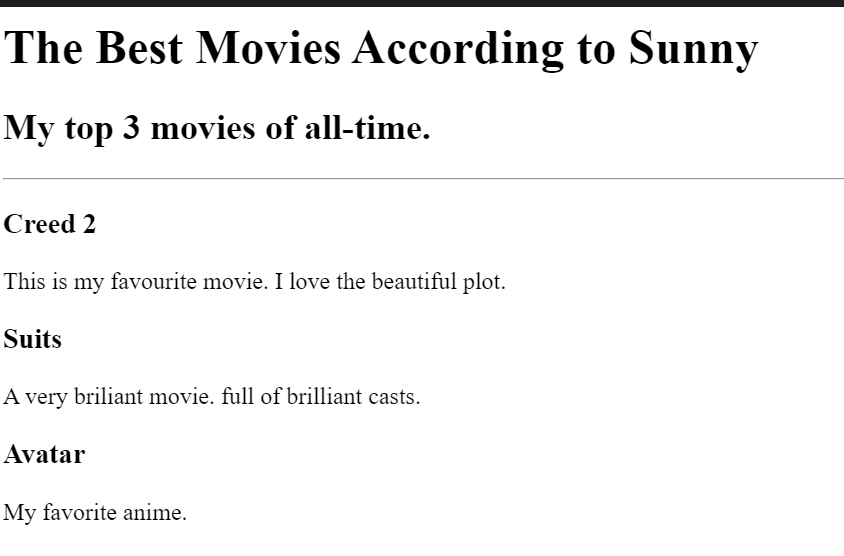

Sunny's profile!
I am a web developer
I hope this turns out to be fun!
some things i am ready to do include:
make mistakes
learn
explore
some things i am not ready to do include:
give up
doubt myself
disbelief
Birthday invite
My top 3 movies

Contact me
About me